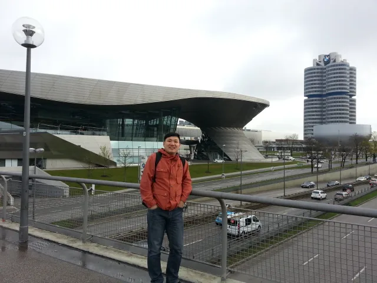
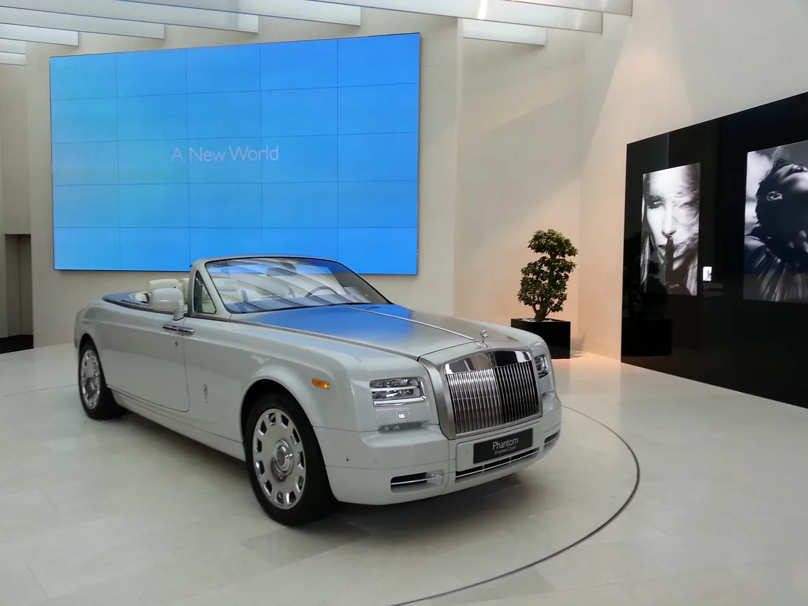
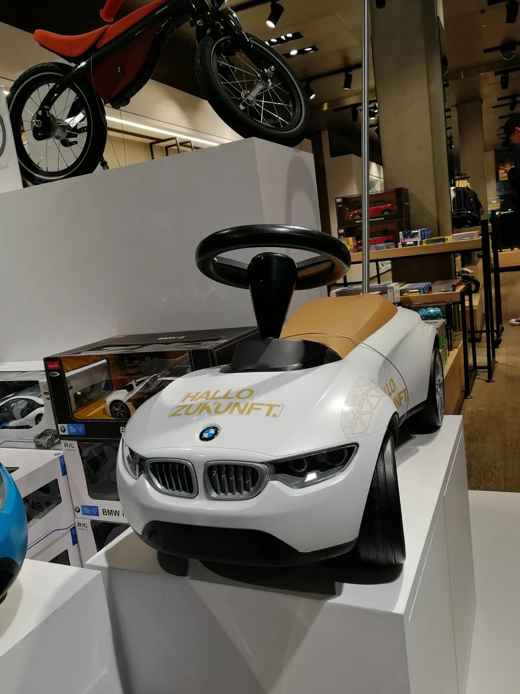
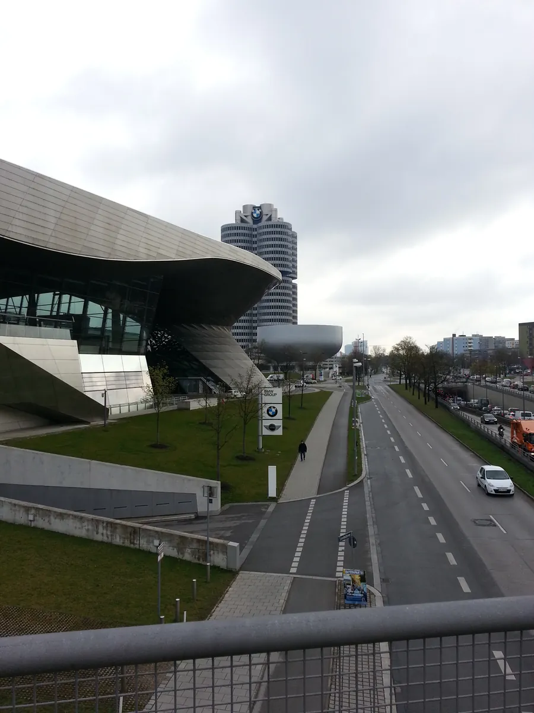
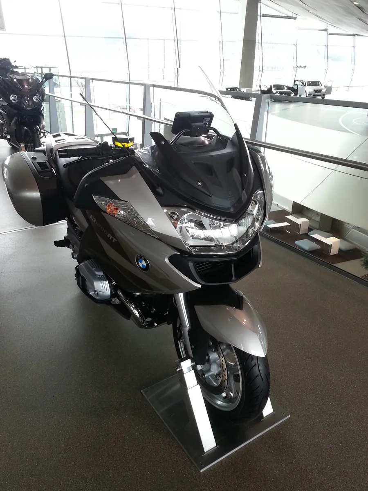

慕尼黑：宝马的大腕，和中国车企正在补的全球化课
Munich — BMW's weight, and the globalization lesson Chinese carmakers are still catching up on.

（2016 年 · 德国 · 慕尼黑 · 宝马博物馆）
宝马博物馆在慕尼黑奥林匹克公园旁，一栋碗状建筑，紧挨着宝马总部的"四缸大楼"。里面按年代摆着这家公司近百年的车型，摩托车、汽车、发动机、赛车混在一起。第一次进去容易被展品的密度绕晕，但如果只抓五样东西——摩托车、那辆造型古怪的小车、MINI、劳斯莱斯、警车——反倒能看出一条清楚的产业逻辑：这家公司几乎每一次"活下来"，靠的都不是造更好的豪华车，而是造出当下市场真正缺的东西。
从发动机厂到摩托车厂，宝马的起点和"汽车"没关系
宝马 1916 年从制造飞机发动机起家，二战前后转向摩托车生产，直到 1928 年才真正进入四轮汽车领域，推出第一款 BMW 3/15 PS。也就是说，在博物馆展区顺序里排在最前面的摩托车，不是宝马的"副业"，而是它的主业出身——汽车反而是后来才补上的一块。这也是为什么博物馆专门辟出摩托车赛车展区，紧挨着宝马引以为豪的直列六缸发动机展示墙：在宝马的叙事里，两条线是同一个技术谱系，不是两个业务板块的拼凑。


那辆"扭扭车"（Isetta），后来成了宝马的大腕
你说的"扭扭车"，大概率是 Isetta——车头就是车门，方向盘和门连在一起，开门的时候整个前脸带着方向盘往外扭，这也是它在中国常被叫成"蛋壳车""扭扭车"的原因。
这辆车在博物馆里看着不起眼，但它是宝马历史上最惊险一段的主角：1950 年代，宝马靠航空发动机血统造出的 501、503、507 高端车型定价过高、几乎每卖一辆就亏一次，1959 年公司亏损达到 1500 万马克，三家主要往来银行都拒绝续贷，戴姆勒-奔驰趁机提出收购。真正把公司从悬崖边拉回来的，一是 1955 年从意大利 ISO 公司买下技术授权、投产的 Isetta——从 1955 到 1963 年一共生产了约 15 万台，靠这款车走量续了命；二是大股东赫伯特·匡特在关键的股东大会上试驾了新车型后改变立场，1960 年匡特家族增资 4000 万马克，把宝马从出售边缘拉回来，并推动公司此后聚焦"中端运动型轿车"这个战略方向，这个家族至今仍是宝马最大股东。
换句话说，博物馆里那辆看起来像玩具车的小东西，是宝马能活到今天、后来还能去收购劳斯莱斯的起点——不体面，但立了大功，是真正的大腕。这也是我自己在现场看展品顺序时的一个判断：博物馆把它摆在很显眼的位置，不是当"奇怪的老古董"来展示，而是当"公司命根子"来讲的。


MINI 和劳斯莱斯：两个收购来的品牌，撑起了宝马现在的品牌矩阵
博物馆里同时看到 MINI 和劳斯莱斯，其实是宝马集团刻意做出来的"三层品牌梯队"：宝马主品牌做运动豪华，MINI 做年轻化的都市小车，劳斯莱斯做顶级奢侈品市场。这两个品牌都不是宝马原生的。
劳斯莱斯的收购过程本身就是一段很有意思的商战：1997 年维克斯集团决定出售劳斯莱斯汽车业务时，宝马和大众两家竞价，大众出价更高、拿下了劳斯莱斯汽车公司这个实体，但宝马多年来一直为劳斯莱斯和宾利供应发动机，也长期与握有商标权的罗尔斯-罗伊斯航空发动机公司合作，于是转而买下了"飞天女神"车标、水箱格栅样式和"RR"商标的使用权。最后双方达成协议，大众拿到的实体并入宾利品牌，从 2003 年起只有宝马才能挂"劳斯莱斯"这个名字生产汽车。也就是说，宝马手里的劳斯莱斯，买到的其实是名字和标志的所有权，而不是原来那家工厂——这在并购史里是个挺少见的操作路径。
警车：一个容易被忽略但很说明问题的细节
博物馆里的警用车辆展区，很多人会当成一个花絮看过去，但它其实是宝马"本地化定制"能力的一个缩影——同一款车型的底子，要按不同国家警队的执法习惯、装备标准、气候条件做适配和改装，这背后是一整套针对政府采购和特种车辆的产品线管理体系。放在整个宝马产业逻辑里看，这和它后来在中国做的事情，思路是一致的：主体技术标准不变，但落地方式必须跟着当地实际情况走。
照进中国企业全球化：宝马在中国的路径，是一份现成的参考答案
这趟宝马博物馆之行发生在 2016 年，那时候华晨宝马已经在中国跑了 13 年。这家中德合资企业 2003 年 3 月由宝马集团和华晨汽车集团共同在辽宁沈阳设立，最初的打法很谨慎——双方把产能规划为 3 万辆，用的还是"共用生产线"这种轻资产模式，而不是一上来就砸重资产建厂。等市场验证之后，宝马才确立"在中国，为中国"的全面本土化战略，2010 年投资建设沈阳铁西工厂。到我去慕尼黑的 2016 年前后，铁西工厂已经开始生产动力总成，沈阳的高压电池生产线也在同年投产，让华晨宝马成为中国首家建立高压电池生产线的豪华车企。再往后看，从 2003 年产出第一辆国产宝马到累计 500 万辆整车下线，全球每卖出三台宝马，就有一台产自沈阳。
这条路径对今天想出海的中国企业，其实是一份很值得对照的样本：宝马没有把中国市场当成"卖车的地方"，而是花了近二十年时间，一步步把研发、动力电池、供应链本地采购都做进了沈阳。这和很多中国企业"先把货卖出去、本地化能拖就拖"的出海惯性刚好是反过来的顺序。宝马的逻辑是：本地化投入得越早、越深，市场给的回报周期也越长——这也是为什么华晨宝马能连续多年成为沈阳当地最大的纳税企业。
一家企业敢不敢在最难的时候，拿出一款不体面但真正解决问题的产品，比它敢不敢喊出"全球化"这句口号，更能说明它能不能真正走向世界。
——董立鑫 海鑫汇创始人兼执行总裁，新加坡世贸秘书长兼首席运营官
写在最后
这么多年跑过的城市里，慕尼黑一直是我印象很深的一个。它不像柏林那样带着历史的重量，也不像法兰克福那样纯粹是个商务中转站——它更像一座把"工业"和"生活"处理得很妥帖的城市：一边是宝马总部这样的全球工业心脏，一边是英式花园、啤酒馆和阿尔卑斯山的影子。走进宝马博物馆之前，我其实没太指望能从一个企业展馆里看出这么多东西，但慕尼黑这座城市本身的气质，多少能解释宝马为什么是现在这个样子——务实、克制，但骨子里很清楚自己要什么。谢谢慕尼黑，这一站的收获比我预想的多。
本文整理自董立鑫（Bruce Dong）海外产业考察记录，首发于海鑫汇。